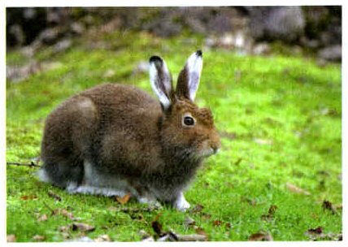
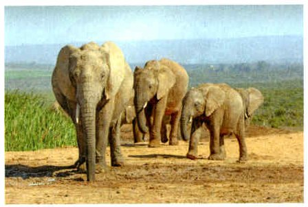
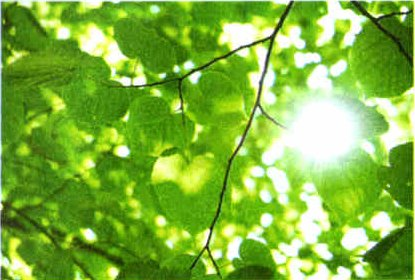
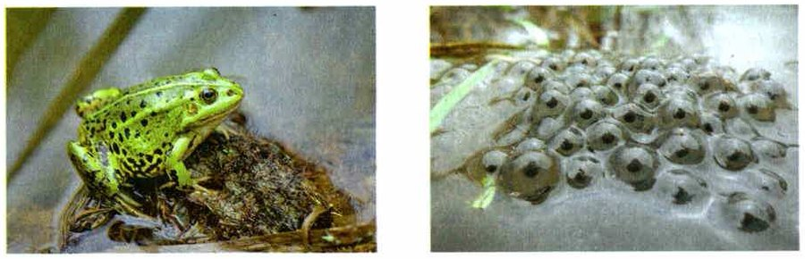

Что такое среда обитания
Условия на нашей планете очень разные. Всё, что окружает живой организм и влияет на него, называют средой обитания. Каждый организм может расти, развиваться и размножаться только при определённых условиях.
В среде обитания есть живая природа, неживая природа и то, что принёс человек.
Одно в среде организму необходимо, другое ему безразлично, а третье ему вредит. Зайцу-беляку в лесу (рис. 76) необходимы растения, кислород и вода — без них он не проживёт. А пень, кочка и валун на его жизнь почти не влияют. Хотя иногда заяц прячется за ними от хищника или от непогоды.
Среда обитания. Природные условия на нашей планете разнообразны. Часть природы, окружающая живой организм и оказывающая на него влияние, называется средой обитания. Каждый организм может расти, развиваться и размножаться только при определённых условиях среды обитания. Среда обитания каждого организма состоит из множества элементов живой и неживой природы и элементов, привносимых деятельностью человека.
При этом одни элементы могут быть необходимы организму, другие — частично или полностью безразличны, а третьи организмы оказывают отрицательное воздействие. Например, обитающему в лесу зайцу-беляку необходимы для жизни растения, кислород, вода. Без них он обойтись не может. А пень, кочка, валун не оказывают существенного влияния на жизнь зайца-беляка (рис. 76). Иногда он может использовать их для того, чтобы спрятаться от хищника или укрыться от непогоды.

▲ Что зайцу необходимо для жизни, а что ему почти безразлично?
1. Что такое среда обитания?
2. Почему растения зайцу необходимы, а пень и валун — почти нет?
Условия и ресурсы
Всё в среде обитания, что влияет на организм, называют экологическими факторами. Их делят на условия и ресурсы.
Условия организмы не тратят. Это температура, влажность воздуха, солёность воды, загрязнения в почве.
Ресурсы организмы потребляют. Почти всем нужен кислород. Растениям нужны солнечный свет, вода и углекислый газ. Травоядным животным — растения.
Ресурсом бывает и пространство. Растению нужен воздух вокруг, чтобы ловить солнечный свет, и немного почвы, чтобы брать из неё воду с минеральными веществами. Тле хватит части листа, а стаду слонов нужны десятки квадратных километров саванны (рис. 77). Хищнику нужна территория для охоты.
Экологические факторы — это явления, свойства и элементы среды обитания, которые влияют на организм. Экологические факторы включают условия и ресурсы. Условия среды не потребляются организмами. К их числу относят температуру, влажность воздуха, солёность воды, содержание загрязняющих веществ в почве.
Ресурсы среды обитания потребляются организмами. Для большинства организмов необходимым ресурсом является кислород. Для растений ресурсами являются солнечный свет, вода, углекислый газ. Ресурсами для травоядных животных служат растения.
Ресурсом для живых организмов может быть пространство. Растениям необходимо воздушное пространство для усвоения солнечной энергии и некоторый объём почвы для потребления воды с растворёнными в ней минеральными веществами. Растительноядным животным необходим участок пастбища. Для тли это может быть часть листа, а для стада слонов пастбищем служат десятки квадратных километров саванны (рис. 77). Хищным животным необходима охотничья территория.

▲ Какой ресурс, кроме травы, нужен стаду слонов? Подсказка: им нужно много места.
не тратятся: тепла в зале не становится меньше, сколько бы Люся ни бегала
тратятся: сено из миски съели — миска пустая, надо подсыпать
Подсказка: если организм это ест, пьёт, вдыхает, поглощает или занимает — это ресурс.
3. Чем условия среды отличаются от ресурсов?
4. Почему для стада слонов пространство — ресурс?
Три группы факторов
Факторов очень много, поэтому их делят на три группы.
Абиотические — факторы неживой природы. Это климат: солнечный свет, температура, влажность. И местность: рельеф, свойства почвы, солёность, течения, ветер.
Один из главных — солнечный свет. От него зависят температура воздуха, испарение воды, движение воздуха и воды в природе. Свет — источник энергии, без которой жизнь невозможна. Он нужен для роста и развития организмов на суше и большинства водных организмов.
Биотические — влияние одних организмов на другие. Для зайца-беляка это травы, которыми он питается. А в траве, среди деревьев и кустов он прячется от непогоды и хищников.
Антропогенные — всё, что делает человек и что меняет условия жизни растений и животных. Люди — тоже один из видов на Земле. Иногда они помогают природе, но чаще вредят ей. Самый опасный вред — загрязнение воды, воздуха и почвы.
Абиотические, биотические и антропогенные факторы. Перечень экологических факторов может быть очень большим. По одной из классификаций их разделяют на три группы: абиотические, биотические и антропогенные.
Абиотические факторы — это факторы неживой природы. Среди них выделяют прежде всего климатические (солнечный свет, температура, влажность) и территориальные (рельеф, свойства почвы, солёность, течения, ветер).
Солнечный свет оказывает влияние на многие виды живых организмов. От солнечного света зависят температура воздуха, скорость испарения воды, движение воздушных и водных потоков в природе. Солнечный свет служит для организмов источником первичной энергии, без которой невозможна жизнь. Солнечный свет необходим для многих процессов, связанных с ростом и развитием живых организмов, обитающих на поверхности земли или вблизи неё, а также для большей части водных организмов.
Биотические факторы — это совокупность влияния одних организмов на другие, различные формы взаимодействия особей и видов между собой. Например, для зайца-беляка важным биотическим фактором являются травянистые растения, которыми он питается. В траве, среди деревьев и кустарников заяц укрывается от непогоды, прячется от хищников.
Антропогенные факторы — это все те формы деятельности человека, которые воздействуют на естественную природную среду, изменяя условия обитания живых организмов, или же непосредственно влияют на отдельные виды растений и животных.
Люди являются одним из видов организмов, населяющих нашу планету. Уже фактом своего существования люди оказывают на природу заметное влияние. Оно бывает положительным, но чаще хозяйственная деятельность человека наносит значительный ущерб. К наиболее существенным антропогенным факторам относят химическое загрязнение воды, воздуха и почвы.

▲ Свет — фактор неживой природы. Назови ещё три таких фактора.
5. На какие три группы делят экологические факторы?
6. Почему солнечный свет так важен для жизни?
7. Какие антропогенные факторы учебник называет самыми существенными?
Как действуют факторы. Среды обитания
Факторы действуют не по одному, а все вместе. Набор факторов, без которых организм не может жить, — это его условия жизни.
Разные организмы по-разному отвечают на одни и те же факторы. В пустыне жарко и сухо — там живут свои растения и животные. В тундре холодно — там свои. От растений зависит, какие животные, грибы и бактерии поселятся рядом. Все эти приспособления появились постепенно, за очень долгое время.
Факторы создают среды обитания: водную, наземно-воздушную и почвенную. Ещё одна среда — сами организмы: в них живут другие организмы.
Многие живут сразу в нескольких средах. У растения стебель и листья — в воздухе, а корни — в почве. Озёрная лягушка (рис. 78) зимует на дне водоёма, весной откладывает икру в воде, а летом охотится на суше на насекомых. Вода летом для неё — место отдыха и укрытие от врагов.
Каждая среда неоднородна. Вода бывает пресной и солёной, стоячей и текучей. На суше есть леса, степи, пустыни. Поэтому организмы селятся на самых удобных участках — это их места обитания.
Влияние экологических факторов на организмы. Экологические факторы в природе действуют в виде сложного комплекса. В зависимости от того, где живут представители разных видов организмов, на них действуют разные комплексы экологических факторов. Комплекс экологических факторов, без которых организм существовать не может, представляет собой условия жизни данного организма.
Различные организмы по-разному воспринимают и неодинаково реагируют на одни и те же экологические факторы. В разных климатических поясах встречаются разные растения. Тип растительности определяет видовой состав обитающих на этой территории животных, грибов, бактерий. В условиях повышенной температуры и низкой влажности существуют растения и животные пустынь. В тундре растения и животные чувствительны к недостатку влаги и способны переносить низкие температуры. Все приспособления организмов к существованию в различных условиях выработались исторически.
Экологические факторы формируют среды обитания: водную, наземно-воздушную и почвенную. Средой обитания служат также сами организмы, в которых живут другие организмы. Многие виды живых организмов живут в нескольких средах обитания. Например, у наземных растений побеги находятся в воздушной среде, а корни — в почве. Озёрные лягушки живут в воде и на суше (рис. 78). Они зимуют на дне водоёмов, весной размножаются в толще воды. Летом лягушки обитают преимущественно на суше. Здесь они охотятся на летающих насекомых и других мелких животных. В летнее время водоёмы служат лягушкам местом отдыха и укрытием от врагов.
Все среды обитания неоднородны. Например, вода как среда обитания может быть пресной или солёной, стоячей или текучей. Наземно-воздушная среда включает леса, степи, пустыни. Поэтому в любой среде обитания организмы населяют наиболее благоприятные участки — это места обитания организмов.

▲ Найди чёрные точки в икринках — из них появятся головастики.
большая: вся водная, наземно-воздушная или почвенная среда
удобный участок этой среды: для озёрной лягушки — заросший берег, а не вся вода на Земле
8. Какие среды обитания называет учебник?
9. Почему про озёрную лягушку говорят, что она живёт в нескольких средах?
10. Чем место обитания отличается от среды обитания?
Итоги и «Моя лаборатория»
Среда обитания · Условия и ресурсы среды · Экологические факторы: абиотические, биотические, антропогенные
- Что такое среда обитания?
- Чем условия отличаются от ресурсов среды?
- Какие ресурсы необходимы для жизни растений и животных?
- Какие факторы неживой природы оказывают влияние на организмы?
- Перечислите абиотические факторы.
- Почему при большом количестве воды растения в тундре растут очень медленно?
Какие из экологических факторов оказывают наибольшее влияние на природу в настоящее время?
- Охарактеризуйте абиотические, биотические и антропогенные факторы. Приведите примеры факторов каждой из этих групп.
- Опишите процессы, проходящие в живых организмах с участием солнечного света.
- Назовите 2—3 вида растений и 2—3 вида животных, обитающих в условиях низкой влажности.
- Приведите примеры факторов, связанных с деятельностью человека.
- Изучив текст параграфа и дополнительные источники информации, заполните таблицу в рабочей тетради: «Среды жизни» — «Живые организмы, населяющие среду жизни».
Сначала заполни таблицу сама, потом сравни.
Наземно-воздушная: заяц-беляк, слоны, птицы, берёза, Люся и Юкси.
Почвенная: дождевые черви, кроты, корни растений.
Организмы: бактерии и паразиты, которые живут внутри других организмов (это будет в §19).
На организм всегда действуют сразу несколько факторов. Одни ему подходят, других слишком много, а третьих не хватает. Например, тенелюбивому растению вредят лишний свет, жара и нехватка воды. Иногда один фактор смягчает другой: голод животные легче переносят в тёплую погоду, чем в сильный холод.
Организмы живут там, где факторы для них лучше всего. За пределами этих мест какой-то фактор может оказаться таким плохим, что организмы гибнут. Такой фактор называют ограничивающим. Для одних это нехватка тепла, для других — нехватка влаги.
В природе всё связано. Летом случилась засуха — луговые растения плохо растут. На них засуха действует прямо. Корма стало меньше — и меньше стало насекомых, их личинок, полевых мышей, а потом и птиц, которые ими питаются. На насекомых, мышей и птиц засуха действует косвенно — через других.
На каждый организм одновременно действует несколько экологических факторов. При этом одни из них могут быть благоприятными, другие — избыточными или недостаточными. Например, на тенелюбивые растения может негативно действовать избыточное количество света и тепла, недостаток воды. При одновременном действии на организм один из факторов может смягчать действие других. Например, недостаток пищи животные лучше переносят в тёплую погоду, чем в очень холодную.
Организмы приспособлены к жизни в таких местах среды обитания, где действующие на них факторы наиболее благоприятны. За пределами этих мест обитания некоторые экологические факторы для организмов могут быть настолько неблагоприятными, что вызывают их гибель. Такие факторы называют ограничивающими. Для одних живых организмов ограничивающим фактором может быть недостаток тепла, для других недостаточное — количество влаги.
Как вы знаете в природе всё взаимосвязано, ничто не существует изолированно друг от друга, каждое событие прямо или косвенно связано с другими. Если значение какого-либо одного или нескольких факторов становится причиной гибели одного вида организмов в конкретном местообитании, то этот фактор будет негативно влиять на все организмы, причём влияние фактора может оказаться прямым или косвенным. Например, в летний период наступила засуха, которая будет отрицательно влиять на рост и развитие луговых растений. Недостаток кормовых растений приведёт к снижению численности растительноядных насекомых, их личинок, полевых мышей. Уменьшение растений, насекомых, мышей негативно скажется на численности птиц. Можно сделать вывод, что воздействие засухи на насекомых, мышей и птиц является косвенным влиянием.
Проверь себя
Ошиблась — не страшно, попробуй другую кнопку.
Температура воздуха
Её не тратят.
Кислород
Его вдыхают — потребляют.
Солёность воды
Её не потребляют.
Сено для Люси и Юкси
Его съедают.
Солнечный свет для растения
Растение поглощает свет, чтобы образовать органические вещества.
Влажность воздуха
Её не потребляют.
Пастбище для стада слонов
Пространство — тоже ресурс.
Ветер
Неживая природа.
Лиса охотится на зайца
Один организм влияет на другой.
Загрязнение реки
Это сделал человек.
Температура
Климатический фактор неживой природы.
Трава, которую ест заяц
Растения — живая природа.
Вырубка леса
Деятельность человека.
1. Что из этого — ресурс для растения?
2. Факторы неживой природы называют…
3. Какие антропогенные факторы учебник называет самыми существенными?
4. Где зимует озёрная лягушка?
5. Чем для стада слонов служат десятки квадратных километров саванны?
6. Засуха погубила траву, и стало меньше полевых мышей. Как засуха подействовала на мышей?
Расскажи вслух
Среда обитания, условия и ресурсы
- Среда обитания — часть природы вокруг организма, которая на него влияет.
- Экологические факторы: условия не тратятся (температура, влажность), ресурсы тратятся (кислород, вода, пища, пространство).
- Пример: зайцу-беляку необходимы растения, кислород и вода, а пень и кочка почти безразличны.
Три группы экологических факторов
- Абиотические — неживая природа: свет, температура, влажность, ветер.
- Биотические — влияние организмов друг на друга: заяц ест траву и прячется от хищников.
- Антропогенные — деятельность человека; самое опасное — загрязнение воды, воздуха и почвы.
Среды обитания
- Водная, наземно-воздушная, почвенная; средой служат и сами организмы.
- Многие живут в нескольких средах: у растений побеги в воздухе, корни в почве; лягушка — в воде и на суше.
- Место обитания — самый благоприятный участок среды.